Use the Run Menu page in Advanced Settings to define programs, program shortcuts and files that you want to append to the Installer Tool's Run menu.
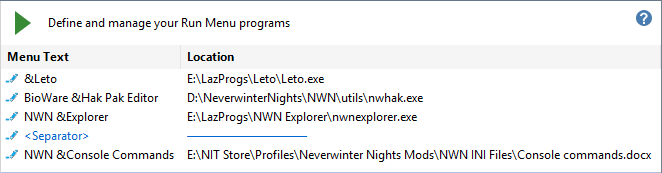
This is what the Run menu looks like after applying the definitions shown in the above illustration.
|
No special keys pressed
|
After you press the Alt key
|
|
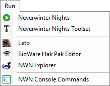
|
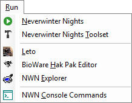
|
If you need to define start parameters for a program, you can create a shortcut with the parameters and add the shortcut to the Run menu.
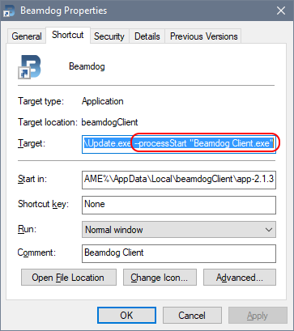
Click the  Edit Icon, Right-Click, Double-Click or press the Space Bar to access the actions menu.
Edit Icon, Right-Click, Double-Click or press the Space Bar to access the actions menu.
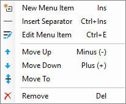
Create a Run menu item
- Select the item that will precede your new entry.
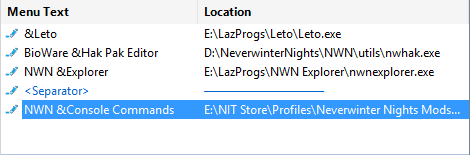
- Press Insert or click New Menu Item from the actions menu.
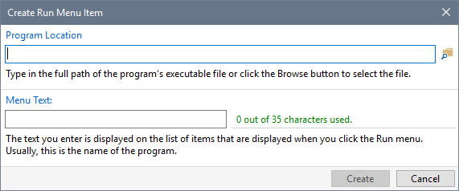
- Type in the location of the program, shortcut or document or use the Browse button to select a file. The Menu Text is set to the file name you specified, but you can change it to suite your preference. Use the ampersand character (&) to define an Alt-Key shortcut. For example, &Project Tracking Tool will display Project Tracking Tool when the Alt-Key has been pressed and is launched using the Alt, R, P key sequence (Run, Project Tracking Tool).
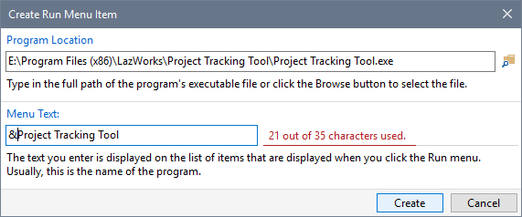
- Click Create when you have provided the required information. The new item is inserted after the entry you selected in step 1.
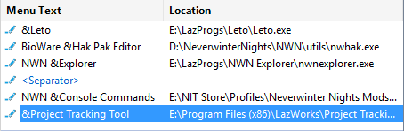
- Click the Save button when you have finished making changes. Click the Run menu to see your new item.
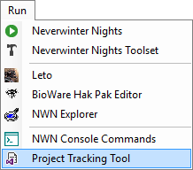
Use the dropdown menu on the Browse dialogue to switch between selecting executable and document files.
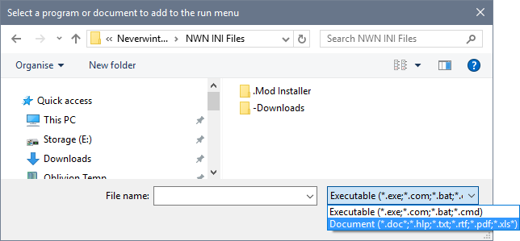
Related Topics
Specify your Preferences
Specify program and file Locations
Specify Configuration Settings
Customise the Run menu
Customise the Web menu
Work with the Extensions map
Work with the Folders map
Work with the Files map
Work with the Excludes map
Work with Fonts and Colours
Customise the Quick Access Toolbar
Export and Import Settings
Import Map Settings